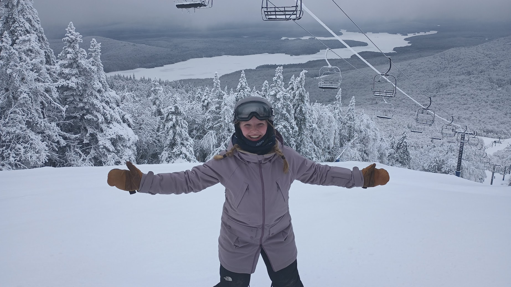
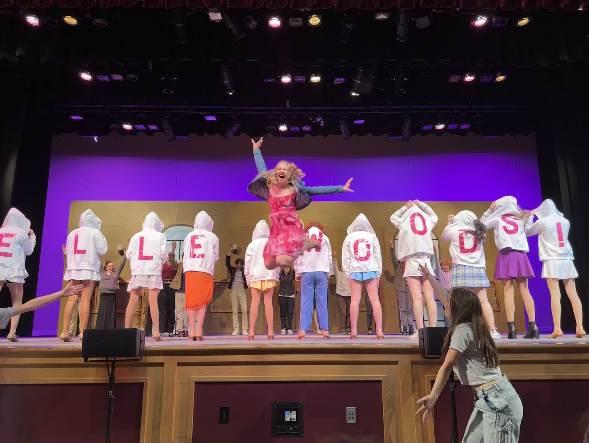
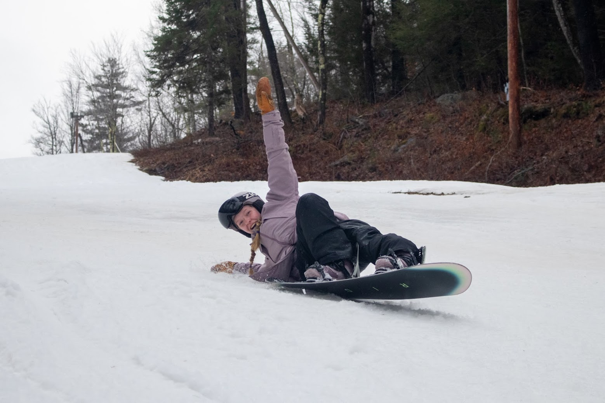
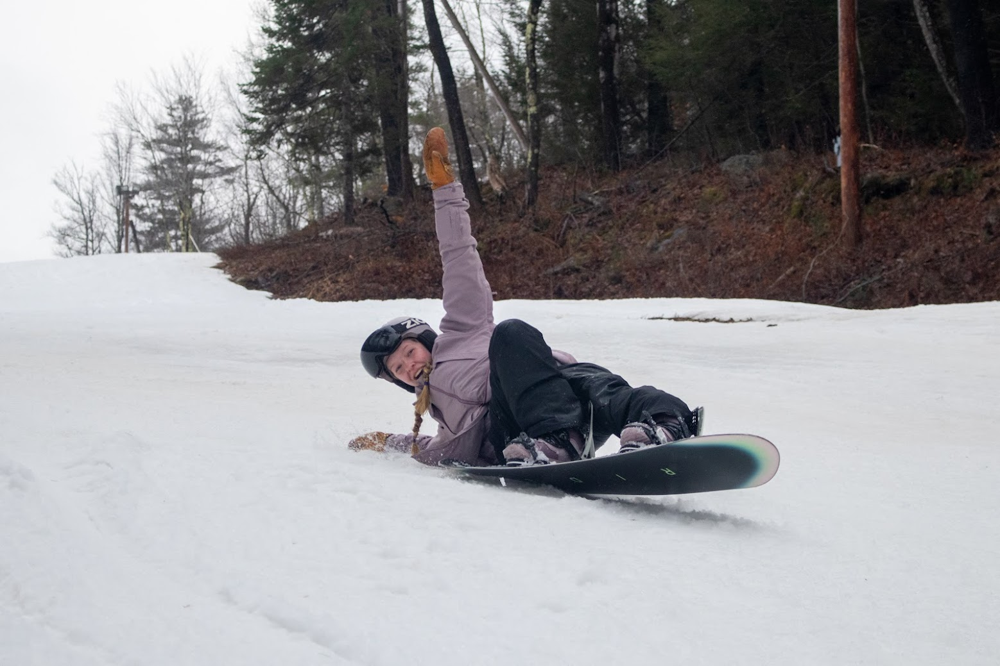

Paws & Play Babysitting and Pet Care Services: Where Every Tail Wags and Every Child Smiles
  

Introducing Emme, your caring caregiver and pet enthusiast! With a knack for nurturing both kids and furry friends, Emme brings joy, safety, and personalized attention to every visit. As an experienced babysitter, Emme creates fun and educational experiences for children, while also providing care and playtime for your beloved animals. Trust Emme to keep both your little ones and whiskered companions happy and content while you're away.
Emme is available for babysitting, mother's helper, and pet sitting! Whether you are having a night out or going on vacation, Emme is here to deliver peace of mind. Here are a few key points about her:
Contact Information: emmeunderwood@gmail.com cell phone number: 603-714-6506